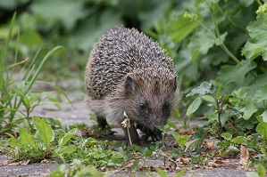
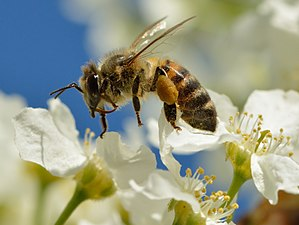
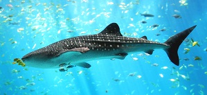

Unsere Tiere
- Säugetiere
- Die Säugetiere (Mammalia) sind eine Klasse der Wirbeltiere. Zu ihren kennzeichnenden Merkmalen gehören das Säugen des Nachwuchses mit Milch, die in den Milchdrüsen der Weibchen produziert wird, sowie das Fell aus Haaren, das sie in Kombination mit der gleichwarmen Körpertemperatur relativ unabhängig von der Umgebungstemperatur macht. Bis auf wenige Ausnahmen (Kloakentiere) sind Säugetiere lebendgebärend. Säugetiere sind an Land am artenreichsten verbreitet, doch bevölkern sie auch Luft und Wasser.
- Insekten
- Insekten (Insecta), auch Kerbtiere oder Kerfe genannt, sind die artenreichste Klasse der Gliederfüßer (Arthropoda) und zugleich die mit absoluter Mehrheit auch artenreichste Klasse der Tiere überhaupt. Beinahe eine Million Insektenarten sind bisher wissenschaftlich beschrieben worden (925.000 nach Grimaldi/Engel 2005, 865.000 nach Nielsen/Mound 1997). Damit sind mehr als 60 Prozent aller beschriebenen Tierarten Insekten. Nach verschiedenen Hochrechnungen rechnet man allerdings mit einem Vielfachen, wobei vor allem in den tropischen Regenwäldern noch Millionen unentdeckter Arten vermutet werden. Fossil lassen sich Insekten zum ersten Mal vor rund 400 Millionen Jahren im Devon nachweisen.
- Fische
- Fische oder Pisces (lateinisch piscis „Fisch“) sind aquatisch lebende Wirbeltiere mit Kiemen. Im engeren Sinne wird der Begriff Fische eingeschränkt auf aquatisch lebende Tiere mit Kiefer verwendet. Im weiteren Sinne umfasst er auch Kieferlose, die unter den rezenten Arten noch mit den Rundmäulern vertreten sind. In beiden Fällen fehlt wenigstens ein Nachfahre der Fische (nämlich die Landwirbeltiere) in ihrer Abstammungsgemeinschaft.
- Vögel
- Die Vögel sind – nach traditioneller Taxonomie – eine Klasse der Wirbeltiere, deren Vertreter als gemeinsame Merkmale unter anderem Flügel, eine aus Federn bestehende Körperbedeckung und einen Schnabel aufweisen. Vögel leben auf allen Kontinenten. Bislang sind über 10.758 existente rezente Vogelarten bekannt, zusätzlich sind 158 Arten in historischer Zeit ausgestorben. Bei Anwendung des moderneren, phylogenetischen Artkonzepts kommt man auf etwa 18.000 (15.845 bis 20.470) Vogelarten und auch genetische Daten deuten auf eine in etwa doppelt so hohe Anzahl von Vogelarten hin.


